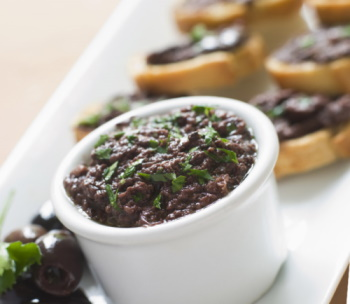

Conheça mais sobre a história do Patê de Azeitonas Pretas!

Tem dias que você só precisa de um aperitivo intenso para dar rumo aos seus pensamentos. Para estas ocasiões a tapenade é uma escolha perfeita.
A Tapenade tem sido um dos mais famosos produtos da gastronomia Provençal. Esta especialidade pode é servida, na maioria das vezes, para acompanhar pães e torradas ou algum outro produto que sirva como aperitivo.
As primeiras alcaparras importadas para a região de Provença eram originárias do Monte Ida, em Creta, no século 6 a.C pelos fenícios. Elas receberam o nome provençal de "tapenei" e seus botões de flor de "tapeno" (alcaparra em Provençal na atualidade).
Apareceu em seguida, o patê de capri "tapeno" que acrescentava alho às alcaparras e era aromatizado com ervas de Garrigue preservadas em azeite de oliva. Guarigue é uma região da Provença, na França, que possui muitos arbustos aromáticos tais como lavanda, sálvia, alecrim, tomilho silvestre e artemísia, que misturadas formam as ervas citadas anteriormente. Esta receita de patê tapeno foi perpetuada por séculos e tornou-se condimento básico para centenas de gerações na cozinha provençal.
Foi em 1980 que o Sr. Meynier, chef no "The Golden House" em Marselha elaborou a "tapenade", para preencher as metades de ovos cozidos, ele havia esmagado a mesma quantidade (200 gramas) de alcaparras e azeitonas pretas, e havia incorporado filés de anchova e atum marinado (100 gramas cada). Esta composição do condimento foi então unida com boas batidas e a adição de especiarias, pimenta, azeite e dois copos de conhaque. Aqui deixa-se claro que a Tapenade não é originalmente uma pasta de azeitona com sabor, mas uma pasta de alcaparras embelezada com azeitonas, verdes ou pretas, e ervas frescas!
Os "prováveis" precursores da tapenade surgem na literatura do período antes de Cristo: Cato, estadista e escritor romano, nascido numa família de camponeses em 234 a.C dá a receita do "epityrum" (uma palavra que evoca o "atrás do queijo"), com base num condimento de oliva que os romanos comiam com queijo. O epityrum era composto de azeitonas pretas ou verdes marinadas e reduzidas em patê com a adição de azeite temperado com vinagre, mel e várias plantas aromáticas (hortelã, arruda). Não era tapenade em si, uma vez que esta preparação não incluía alcaparras, elemento essencial da tapenade.
Hoje em dia a preparação da tapenade foi simplificada. A azeitona tem-se tornado o principal componente da receita, seguido pela alcaparra, e outros sabores, tais como alho e anchovas que melhoram o sabor. Há hoje duas variações básicas da tapenade:
Tapenade preto: que leva o nome de tapenade, é simplificada e composta por Azeitonas, que se tornaram o primeiro ingrediente, seguido de alcaparras e filetes de anchovas apenas para melhorar o sabor, não é adicionado um dente de alho esmagado com azeite de oliva e pimenta.